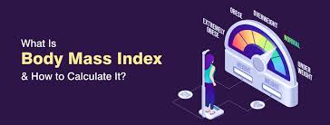

Body mass index (BMI) is a way of measuring whether you are a healthy weight for your height. It is used to categorise someone as being underweight,
a healthy weight, overweight, or obese. BMI is calculated by dividing your weight in kilograms by your height in metres squared.
The categories for BMI ranges are as follows:
* Underweight: below 18.5
* Normal or healthy weight: 18.5–24.9
* Overweight: 25–29.9
* Obese: 30 and above
Path to improved health
You may be diagnosed with obesity if your body mass index (BMI) is at or above 30kg/m2. You can lower your BMI by following standard weight-loss tips, such as:
- Eating healthy- Choose lean meats, fruits, vegetables, and whole grains. Reduce alcohol, sugar, processed foods, sodas, and juices. Consume fewer calories.
- Exercising regularly- This includes cardio and weight-bearing exercises to build muscle and lose fat. This is effective in controlling belly fat. Belly fat increases the risk of certain health conditions. Always talk to your doctor before beginning an exercise program.
- Being mindful of portion control- Don’t overeat during meals and snacks.
If your child’s BMI is high (above the 85th percentile), talk with your doctor about how you can help your them lose weight.